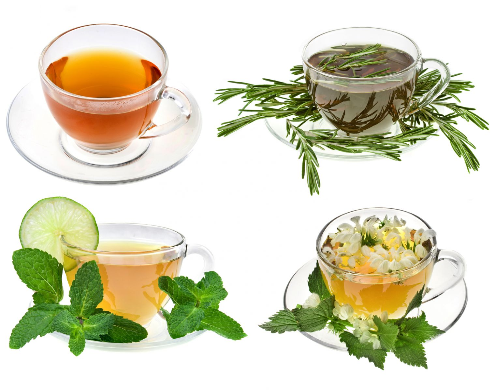

Лечение заболеваний нервной системы.

Наиболее часто пустырник применяют как средство при повышенной нервной возбудимости. Препараты пустырника по силе своего воздействия превосходят такое излюбленное всеми средство как корень валерианы в три-четыре раза. А благодаря своему великолепному составу оказывают более глубокое успокаивающее воздействие на центральную нервную систему, входя основным компонентом в состав «нервных» сборов.
Итак, что же следует понимать под понятием «нервное заболевание»? Это довольно обширное понятие. Наиболее часто встречающиеся заболевания — неврозы.
Благодаря нашему бурному веку они стали бичом современного человека. Многие страдания приносят они в дома своих хозяев, заставляя последних тратить свои уже и без того измученные нервы на походы по врачам. Попробуйте прибегнуть к советам народной медицины, но используя последние исследования современной медицины в данном вопросе. Поступая таким образом, вы обезопасите себя от неправильных действий и не нанесете вреда своему здоровью.
Вот некоторые из сборов, которые помогли избавиться от нервного перенапряжения многим людям.
НАСТОЙ ПРИ ПОВЫШЕННОЙ НЕРВНОЙ ВОЗБУДИМОСТИ И БЕССОННИЦЕ
Требуется: 2 ст. л. травы пустырника, 1 ст. л. травы сушеницы, 1 ч. л. измельченного корня валерианы, 1 ст. л. травы вереска, 1 л воды.
Способ приготовления и применения. Смесь настаивайте в 1 л кипятка в духовке 12 ч, процедите. Принимайте настой по 1 ст. л. 4 раза в день.
НАСТОЙ ПРИ ИСТЕРИЧЕСКИХ ПРИПАДКАХ
Требуется: 2 ст. л. травы пустырника, 1 ст. л. травы ясменника душистого, 1 ч. л. травы сушеницы, 1 ч. л. травы чабреца, 2 ст. л. листьев ежевика, 1 л воды.
Способ приготовления и применения. Смесь залейте кипятком и настаивайте в течение 2–3 ч. Принимайте по половине стакана 4 раза в день через 1 ч после еды.
УСПОКАИВАЮЩИЙ ОТВАР
Требуется: 1 ст. л. травы пустырника, 1 ст. л. травы толокнянки, 3 стакана воды.
Способ приготовления и применения. Залейте траву кипятком, варите, пока жидкость не убавится на треть, процедите.
Принимайте по половине стакана 3–4 раза в день через 1 ч после еды.
УСПОКАИВАЮЩИЙ НАСТОЙ
Требуется: 1 ст. л. травы пустырника, 1 ст. л. корня валерианы, 1 ч. л. семян тмина, 1 ч. л. семян фенхеля, 1 стакан воды.
Способ приготовления и применения. Смесь из травы и семян заварите кипятком и настаивайте 1 ч, затем процедите и принимайте теплым по половине стакана 3 раза в день, причем последний раз на ночь.
* * *
Нельзя недооценивать важность предупреждения нервных срывов.
В основе практически всех заболеваний лежит сбой нервной системы человека. Только от вас зависит то, как вы будете себя чувствовать. Нервные переживания имеют свойство накапливаться. Стоит ли испытывать на прочность свое здоровье или нет — решать вам. Но подумайте о тех людях, которые вас окружают. Они очень часто оказываются единственным громоотводом для ваших потрепанных нервов.
Стоит ли накапливать в себе негатив? Может быть, проще и лучше заранее погасить в себе все неприятные эмоции, возникшие за день? Это очень просто сделать, если ввести себе за правило употреблять при повышенной нервной возбудимости успокаивающие чаи на основе пустырника.
УСПОКАИВАЮЩИЙ ЧАЙ ДЛЯ ПРОФИЛАКТИКИ НЕРВНЫХ СРЫВОВ
Требуется: 1 ст. л. травы пустырника, 1 ст. л. травы сушеницы, 1 ст. л. цветков боярышника, 1 ч. л. цветков ромашки аптечной, 1 ч. л. листьев мяты перечной, 2 стакана воды.
Способ приготовления и применения. Все компоненты должны быть достаточно просушены. Их необходимо (каждый по отдельности) тщательно истолочь и перемешать до получения однородной массы. Заварите смесь кипятком и настаивайте под крышкой 10 мин. После этого ваш чай готов. Процедите его через ситечко, добавьте 1 ч. л. сахара или меда и пейте на здоровье.